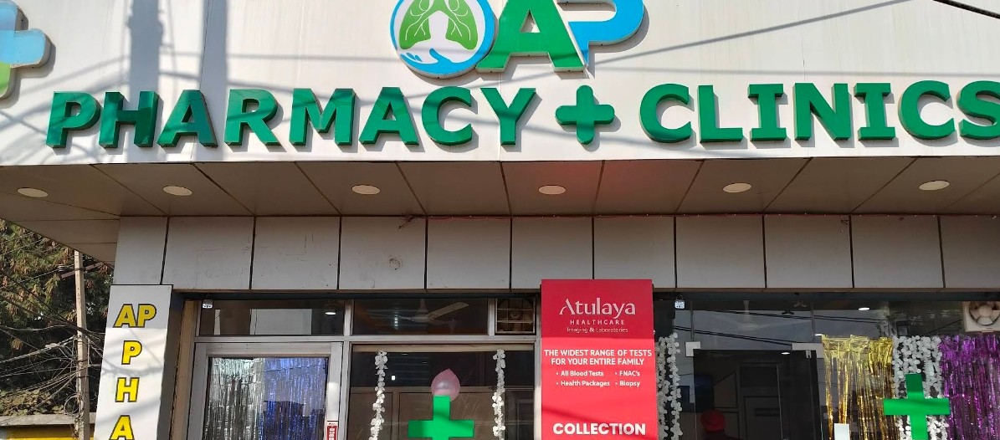
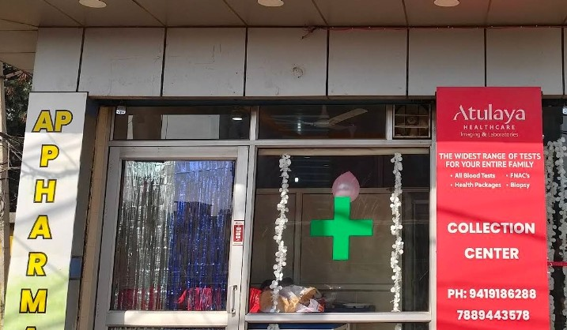
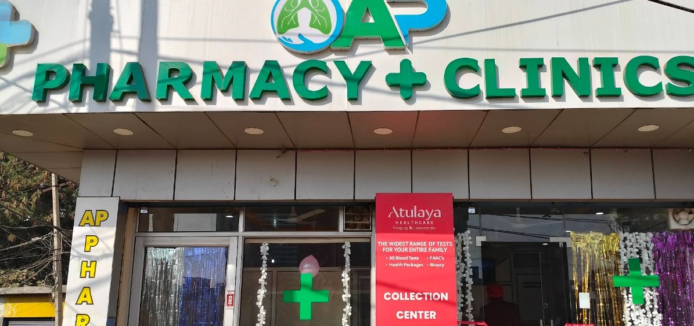

Pulmonary & Chest Care
Dr. Jaskirat sees chronic cough, asthma, breathlessness, and other lung conditions — the kind of care that benefits from someone who specializes in the chest, not general practice.
Kunjwani · NH44 Bypass · Jammu
When it takes effort, AP Pharmacy + Clinics is where Jammu comes for pulmonary care. Dr. Jaskirat treats the chest and lungs; our pharmacy fills what he prescribes; our lab, run with Atulaya Healthcare, tells you what's actually going on — all in the same building, opposite D Mart.

Our storefront on the NH44 Bypass, Kunjwani
AP Pharmacy + Clinics opened its doors on the NH44 Bypass with a simple idea: stop sending people back and forth between a doctor's office, a chemist, and a diagnostic lab across town. A consultation, a prescription, and a blood test can happen in one visit, in one building.
The clinic side is anchored by pulmonary care — chronic cough, asthma, and lung disease are conditions that reward a specialist who sees them often, and that's the practice Dr. Jaskirat has built here. Downstairs, the pharmacy keeps what gets prescribed in stock. And through our Atulaya Healthcare collection center, the same visit can include blood work, FNAC, imaging referrals, and full health packages.

Three departments, working as one visit.
Dr. Jaskirat sees chronic cough, asthma, breathlessness, and other lung conditions — the kind of care that benefits from someone who specializes in the chest, not general practice.
A fully stocked pharmacy at street level, built to fill what our own doctors prescribe — no separate trip to a chemist after your consultation.
Run with Atulaya Healthcare: blood tests, FNAC, health packages, and biopsy collection — a wide range of tests for the whole family, on site.
Meet the specialist
Chest Specialist & Pulmonologist
Patients come to Dr. Jaskirat for the conditions that don't resolve on their own — a cough that's lasted weeks, asthma that isn't well controlled, breathing that takes more effort than it should. The practice is built around pulmonary and chest medicine specifically, which is what patients consistently point to when describing their care here.
"Visited Dr. Jaskirat for a chronic cough. He is the best pulmonologist in Jammu — symptoms improved drastically."
This is one of the best places for treatment of pulmonary and lung diseases in J&K. Highly recommend.
Visited Dr. Jaskirat for a chronic cough. He is the best pulmonologist in Jammu. My symptoms improved drastically — must visit.
More photos of the pharmacy counter, lab, and consultation rooms are on the way.

NH44 Bypass Road, Kunjwani, Jammu
Open in Google Maps